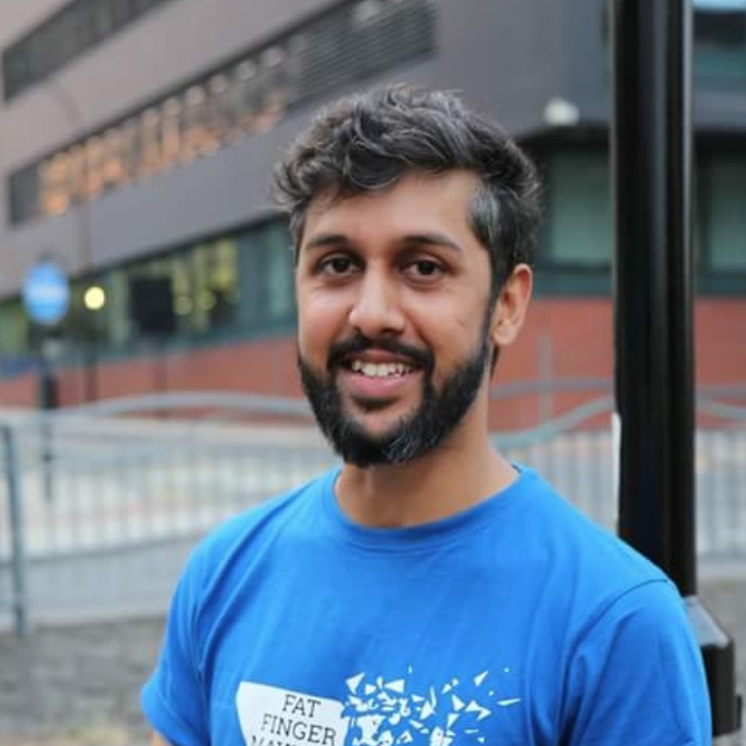
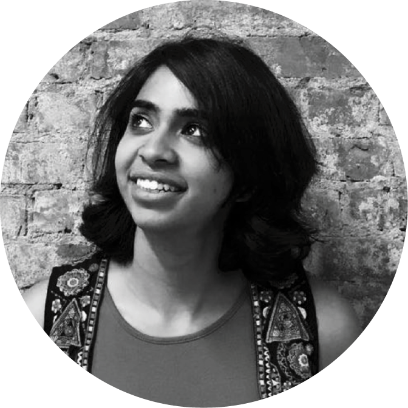

Click here to register for the event
Creative Coding Santé a.k.a CCSanté is a series of one day events, hackathons and meetups focussing on creative coding. Our first official event will be on May 25th in Bangalore. A day full of hands on workshops and informal networking to introduce you to creative coding and some amazing possibilities with it.
The idea that software is for engineers, or that creativity is for aritsts is antiquated. We are in an age where we need Science and Engineering to combine with Creativity and Art. Creative coding is one step in that direction where we introduce programming to the artists, and art to the programmers.
A focus of this collective is to make learning how to program and make creative work with code accessible to diverse communities, especially those who might not otherwise have access to these tools and resources.
For any questions, email Mathura Govindarajan or Karthik Dondeti
Event Schedule
-
9:30 - 10:00
Welcome, and have coffee!
-
10:00 - 12:30
Generative Paintings : An introduction to creative coding
-
12:30 - 1:30
Lunch (will be provided)
-
1:30 - 3:30
You are your data - An Intro to Data Art using p5.js
-
3:30 - 4:00
Coffee + Informal Networking
-
4:00 - 6:00
Live coding visuals with Hydra
-
6:00 - 6:15
Algorave Demo
Workshops
-
Generative Paintings : An introduction to creative coding
with Karthik Dondeti and Mathura Govindarajan
This workshop will walk through the basic concepts of programming while we make art with code. We will learn about functions, loops and recap trignometry all while generating different pieces of algorithmic art.
No knowledge of p5.js or coding is required for this session.
For those of you who are already familiar with p5.js, we will have a hackathon on generative paintings running parallely! -
You are your data - An Intro to Data Art using p5.js
with Rasagy Sharma
What does your phone know about you? How does this data define who you are?
In this workshop, we'll learn how to create art with data. We'll explore what our phones already know about us, find insights from this data, and try a unique way to visualize this on paper & using code.
Basic knowledge of p5.js will be helpful — make sure you attend the first workshop if you don't know p5.js or want to brush up the basics! -
Live coding visuals with Hydra
with Abhinay Khoparzi
In this workshop, we'll learn how we can use hydra to create live visuals for music. Integrate the worls of programming, art and music in one go!
Basic knowledge of p5.js and programming is necessary — make sure you attend the first workshop if you don't know p5.js or want to brush up the basics!
Presenters
-

Abhinay Khoparzi
Abhinay Khoparzi is a multidisciplinary creative technologist who maintains a practice across film, video, music and web technologies. He has had a long relationship with the experimental electronic music scene in Mumbai with performances at The Indian Electronica Festival (Blue Frog, 2008), 6 Foot Oscillator in a 4 foot Room (Zenzi Mills, 2009), One Sunday (H20, 2011). He is also known for his collaboration with artists like Kargo Pluggy, Sadahnmo from the varied roster of the pioneering but now defunct web platform, netlabel, and publishing company 3rd Thought Entertainment.
Abhinay is one of the co-instigators of Algorave India, a collective of artists, musicians, and visualists intent on promoting programming as performance art through events called Algoraves. As an extension of this he has performed with live coding platforms TidalCycles and Hydra at Fat Finger Mayhem (`Max Mueller Bhavan, Mumbai, 2018 and 2019), Algorave Sheffield (UK, 2018), International Conference of Live Coding (Madrid, 2019) -

Karthik Dondeti
Karthik Dondeti is a practicing architect and founder of Voxelscapes - an Architecture studio and Codebale - a Generative art studio based in Bangalore. He holds a Bachelors Degree in Architecture from the School of Planning and Architecture, New Delhi and a Masters Degree focusing on Design and Technology from the Graduate School of Design at Harvard University. Karthik is passionate about operating at the intersection of the Digital and the Analogue and is currently working towards incorporating algorithmic design processes in the domains of Art and Architecture. He is also active in the academic domains, teaching courses on Digital modeling and Computational Design in schools of Architecture across India.
-

Mathura Govindarajan
Mathura Govindarajan is a software engineer and creative technologist from Bangalore, India. She holds a Bachelors in Electronics Engg. from National Institute of Technology, Surathkal and completed her Masters and Fellowship at New York University's Interactive Telecommunications program. She was also a Processing Fellow in 2018 and was part of a team that worked on making p5.js more accessible to users with low vision and blindness. Currently working on two education based startup in New York and Bangalore, she enjoys making educational experiences and tools for children and adults alike.
-

Rasagy Sharma
Rasagy Sharma is an Interaction Designer, Data Artist & Sketchnoter. He works as a Principal Designer at Gramener, a Data Visualization consulting firm. He enjoys exploring the intersection of design, data & development, and has earlier worked in Data Visualization & UX design at firms like Mapbox, Barclays and Microsoft. He's a NID & BITS alumnus, and believes in growing through communities.
Contact
For any questions regarding the event or ticketing, please email Mathura Govindarajan or Karthik Dondeti